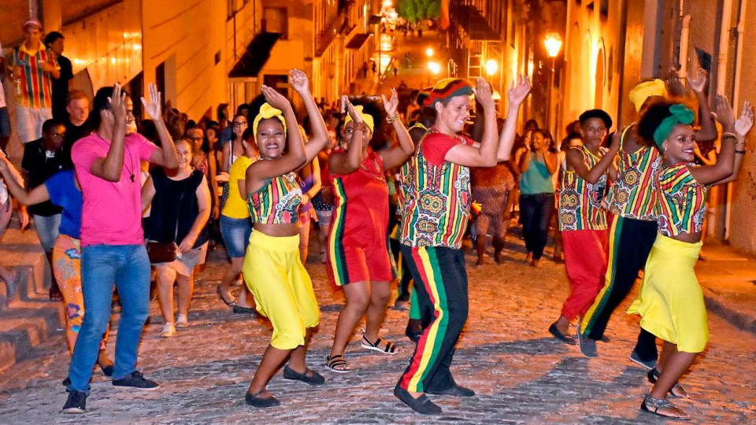
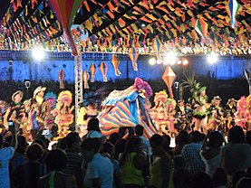

Reggae
Um dos ritmos mais trocados em todos o estado. O reggae é uma música melódica, atrelado fortemente ao movimento da negritude.
Na década de 1970, se popularizam as festas na periferia com o ritmo arrastado. Nos anos 1990, o reggae começa a dominar as rádios maranhenses. O programa de maior audiência do estado era sobre o ritmo e apresentado por Fauzi Beydoun, vocalista da banda Tribo de Jah.
Há várias teorias sobre como o reggae chegou até o Maranhão. Segundo relatos de maranhenses, na década de 1970 o ritmo veio pelas ondas de rádios caribenhas que traziam também gêneros como calipso e zouk.
Outra teoria, é que marinheiros que desembarcavam no porto de São Luís utilizavam os discos de reggae como moeda de troca. É o que explica, Franck Rabelo, mais conhecido por DJ Franck Wailer.
“Alguns falam que os marinheiros trouxeram alguns discos e entre eles reggae. E por aqui faziam permutas por bebidas e até por lazer individual.”
Bumba meu Boi
O enredo da festa do Bumba-meu-boi resgata uma história típica das relações sociais e econômicas da região durante o período colonial, marcadas pela monocultura, criação extensiva de gado e escravidão, mesclando a cultura europeia, africana e indígena.
Numa fazenda de gado, o escravo Pai Francisco mata um boi de estimação de seu senhor para satisfazer o desejo de sua esposa grávida, Mãe Catirina, que quer comer a língua do boi. Quando descobre o sumiço do animal, o senhor fica furioso e, após investigar entre seus escravos e índios, descobre o autor do crime e obriga Pai Francisco a trazer o boi de volta.
Coquitéis e curandeiros (pajés) são convocados para salvar o boi e, quando o boi ressuscita urrando, todos participam de uma enorme festa para comemorar o milagre.
O bumba meu boi é uma apresentação artistica tradicional maranhense, performada principalmente na época de São João(24 de junho).